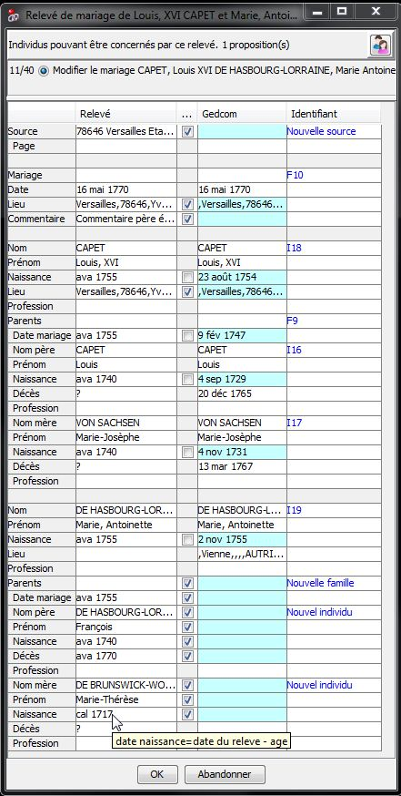

|
Les données du relevé. sont affichées dans la colonne intitulée Relevé.
Il est possible de décocher les données que l'on ne souhaite pas copier.
Dans cet exemple un nouvel invidivu va être créé en tant qu'enfant de la famille F9 . |


|  |
Le mariage de la famille F10 existe déjà dans l'arbre.
|